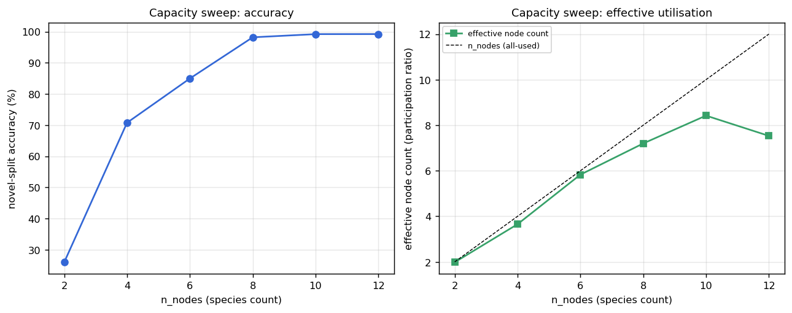
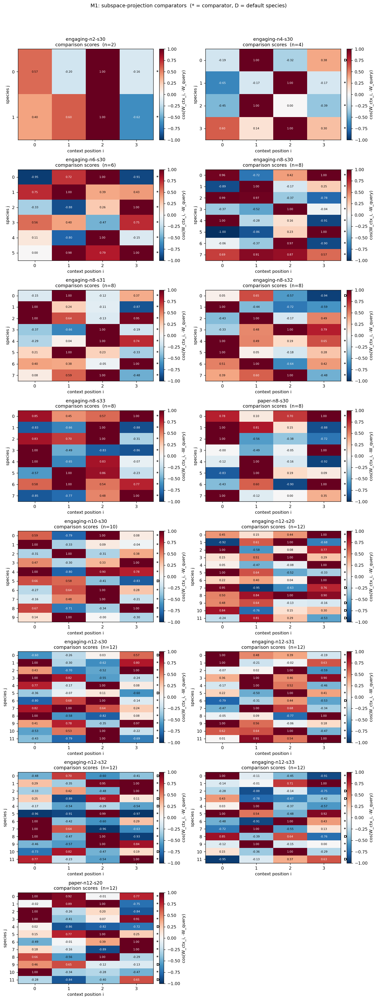
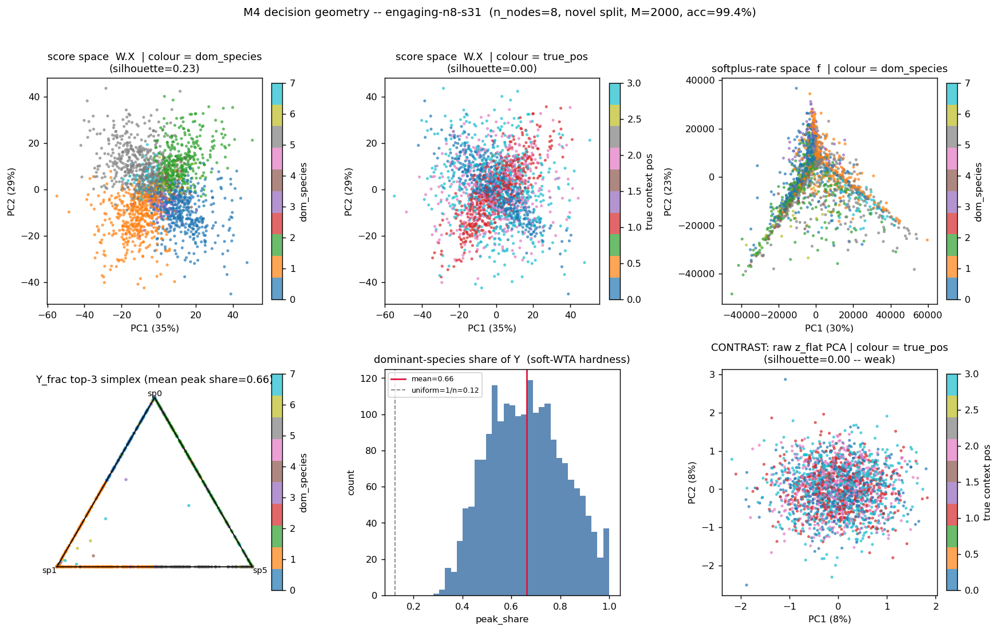
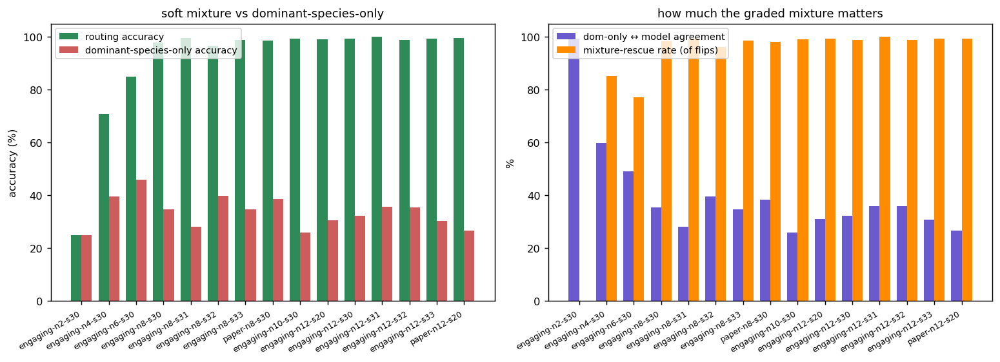
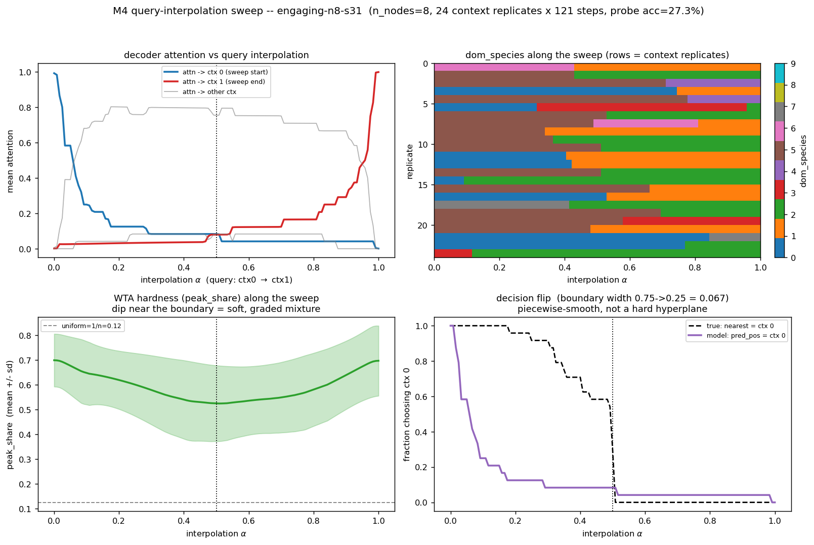
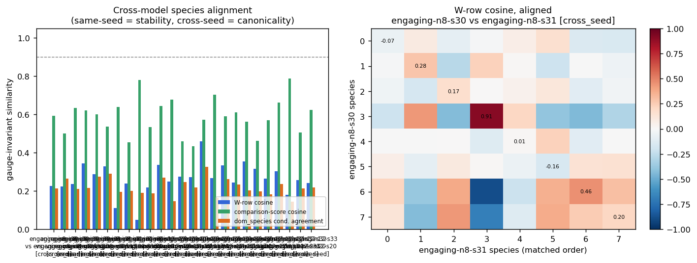
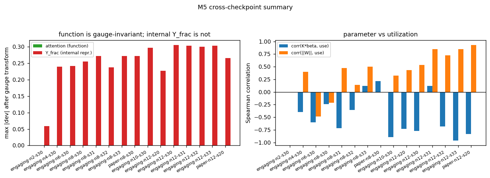

Mechanistic analysis
A Winner-Take-All chemical reaction network learns to classify in context with no attention mechanism. We open up 15 trained networks and recover how it works.
In-context learning (ICL) in these chemical reaction networks is not a discrete winner-take-all computation and not attention. It emerges at a hard capacity threshold, runs on a graded mixture of chemical species, and is implemented by a degenerate family of circuits. Four results:
We also establish an exact gauge symmetry of the model (§7) which makes the bare reaction parameters K and β individually unphysical.
The task. The network is shown a sequence of N = 4 context examples, each a point in D = 4 dimensions drawn near a Gaussian-mixture class mean, each carrying a discrete label (one of L = 128). A query is appended that exactly copies one of the context examples; the network must output that example’s label. The decisive test uses novel classes — class means never seen during training — so the answer cannot be memorised in the weights. It must be read off the context. That is in-context learning.
The network. There is no transformer, and no attention in the usual sense: nowhere is a query–key dot product zi·zq computed. Instead the whole sequence is flattened into one vector X ∈ ℝ(N+1)D = ℝ20, and a set of n chemical species compete over it.
Each species j projects the entire input through a learned weight vector Wj and a soft-rectifier, giving a reaction rate:
The species compete through a selection score rj = βj/fj; the network favours the species of smallest score. At steady state the chemical concentrations are
and a learned decoder B maps the concentration vector onto the four context positions, which then vote their labels:
The learnable parameters are the projections W, the per-species constants Kj and βj, and the decoder B — on the order of 200–300 numbers in total. The temperature τ of the soft winner-take-all is small (0.01).
Comparison subspaces. To answer correctly a species must fire when the query matches context item i — that is, detect membership in the subspace Mi = {X : zi ≈ zquery}. A clean comparator has its weight vector Wj equal and opposite across the context-i block and the query block, so that Wj·X measures the difference zi − zquery. The paper calls this mechanism subspace projection; §4 confirms it is what the trained networks actually do.
We analyse 15 trained networks: the two original paper checkpoints, their reproductions retrained from scratch on the MIT Engaging cluster, a capacity sweep over n = 2, 4, 6, 8, 10, 12 species, and seed replicates at the two headline sizes n = 8 and n = 12. Every retrain reproduces the paper’s novel-class accuracy to within ~0.5%.
Each network is probed on one fixed evaluation set of 2,000 sequences (in-distribution and novel-class) through a single instrumented forward pass, so that every analysis — connectivity, species utilisation, routing, decision geometry, reaction parameters, and cross-model comparison — reads exactly the same internal traces. All quantities below are on the novel-class split: true in-context generalisation.
In-context learning is absent in small networks and appears, sharply, once the network has about eight species.
| species n | novel-class accuracy | regime |
|---|---|---|
| 2 | 25.9% | chance (4-way task) |
| 4 | 70.8% | one detector per position — insufficient |
| 6 | 85.0% | partial |
| 8 | 98.2% | ICL works — n = 2·Nc |
| 10 | 99.2% | saturated |
| 12 | 99.2% | saturated (over-provisioned) |
With Nc = 4 context positions, a network with only four species — one detector per position — reaches just 71%. Reliable ICL arrives at n ≈ 8 = 2·Nc: roughly two detector species per comparison subspace. Beyond that, accuracy is flat; the extra species in the n = 10 and 12 networks are not converted into extra performance.

The species are comparators: each projects the whole input onto a context-versus-query difference subspace. The structure that solves the task lives in projection space, not in the input.
In every working network, all four context positions are covered by clean comparator species — weight vectors that are equal and opposite across a context block and the query block, with alignment cosines reaching 1.0. This is the subspace projection mechanism made explicit: no pairwise score is ever formed; the comparison is done by a single linear projection of the joint context–query vector.

The same point shows in the geometry. Embedding the 2,000 evaluation inputs in their raw form reveals no class structure at all. Embedding them in projection space — the per-species scores Wj·X — reveals clear structure, and that structure is organised by which species fires, not by the answer. The network builds its partition; the input does not contain one.

Despite the name, the winner-take-all does not pick one species. The steady state spreads over two to three species, and that graded mixture — not the single strongest species — carries the computation.
The dominant species holds only ~56–68% of the total concentration. To test whether that dominant species is the computation, we decode from it alone — route through its decoder row only — and compare to the network’s real answer. For the working networks (n ≥ 8) the dominant species alone reproduces the answer just ~33% of the time. The mixture overrides the dominant species in roughly 65% of examples, and when it does it is correct ~99% of the time. The graded combination is the algorithm.

Roughly 2.2 species decode to each context target, and species that share a target have near-orthogonal weight vectors — they are genuinely different detectors, not redundant copies. This is the “branch” structure behind the 2·Nc capacity threshold of Result 1: each comparison subspace is covered by a small set of distinct detectors whose graded combination, not whose winner, gives the answer.

There is no canonical circuit. Networks trained from different random seeds reach parametrically different solutions — while still covering the same comparison subspaces.
Across 23 cross-seed pairs of same-size networks, we align species optimally and measure how similar the aligned weight vectors are. The cross-seed weight cosine is only ~0.25 — barely above the magnitude expected for random 20-dimensional vectors. Independent runs share almost no weight-level structure.
What is shared is the function. The comparison-subspace pattern — which context-versus-query subspaces are detected — aligns at cosine ~0.59, well above chance. So the picture is precise: the topology is parametrically degenerate but functionally constrained. Many distinct circuits implement in-context learning; what they have in common is not a weight pattern but the set of comparison subspaces they cover.

The model has an exact symmetry that makes its bare reaction parameters unphysical — and ignoring it corrupts measurement.
For any species r and any λ > 0, the transformation
leaves the network’s input–output function exactly unchanged — verified numerically: predictions do not move, and attention shifts by less than 10−4. A trained Kr or βr therefore carries no meaning on its own; only the gauge-invariant combinations — the projections W, the products Kr·βr, and the effective decoder Kr·Br — are physical.
This is not a technicality. A species’ concentration is gauge-dependent: under a random gauge transform the normalised concentration vector moves by up to 0.3. Measured naively, the “effective number of species used” averages 6.7; measured on the gauge-invariant contribution it averages 4.9. The analyses above use only gauge-invariant quantities. The n = 12 networks are visibly over-provisioned: 63% capacity utilisation, with 21 idle near-zero-weight “default” species across the set.

In-context learning in these chemical reaction networks emerges at a hard capacity threshold of roughly two detector species per context position. It is executed not by a discrete winner but by a soft, graded mixture of chemical species. And it is implemented by a parametrically degenerate family of circuits constrained only to cover the right comparison subspaces — there is no single canonical topology, and the underlying reaction parameters K and β are individually unidentifiable.
The headline of the model — that a tiny attention-free reaction network does in-context learning — survives scrutiny. But the form of the computation is not the one the name suggests: it is subspace projection feeding a graded mixture, and the “winner-take-all” is, in practice, soft.
Analysis code: ICL/topology_analysis/ (six modules
m1–m6 over a shared instrumented core, plus run_all.py).
Full output — 112 figures and summary.json —
ICL/results/topology_analysis/. Checkpoints:
ICL/paper_checkpoints/ and
ICL/results/wta_n_nodes_rhoall_seed/.
Repository statmech-learning/MarkovComputations, branch
wta-icl-reproduction. Model: the Winner-Take-All ICL chemical
reaction network (arXiv 2601.06712).